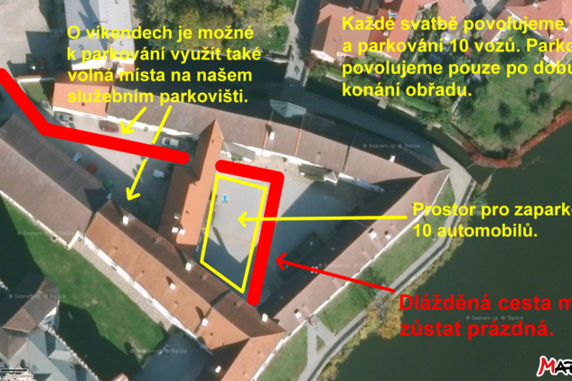
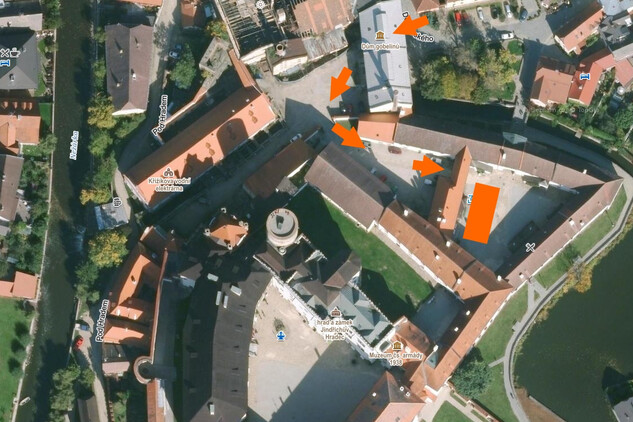

Obřad
Místo a Čas
Začátek obřadu
Obřad proběhne v arélu zámku Jinřichova Hradce, konkrétně v hudební pavilon Rondelu.


Cesta
Z Českých Budějovic
Z Českých Budějovic jeďte po silnici I/34 směrem na Třeboň a dál na Jindřichův Hradec. V Jindřichově Hradci pokračujte do centra na Balbínovo náměstí, odkud se k areálu zámku vjíždí (podrobnosti najdete v části Parkování níže).
Naplánovat trasu v Google Maps
Z Číměře 5
Z Číměře 5 (378 32 Číměř) vyjeďte na hlavní silnici II/128 směrem na Jindřichův Hradec. Silnice vás povede přes Horní Pěnu až do Jindřichova Hradce. Dále pokračujte do centra na Balbínovo náměstí a k areálu zámku.
Naplánovat trasu v Google Maps
Parkování
Ohledně parkování je potřeba se ještě individálně domluvit kvůli omezenému počtu míst a času!
Vjezd maximálně 10 vozů a parkování jen po dobu obřadu. Zvláště v případě více svatebních obřadů v jednom dni musíme na dodržení tohoto pravidla trvat.
K areálu zámku lze přijet pouze z Balbínova náměstí (do zákazu vjezdu). Do areálu zámku vjíždějte pouze postranní branou, hned po sjezdu z kopce z Balbínova náměstí doprava. (Dobře si nadjeďte...) V bráně sídlí Dům gobelínů. Více na vložených mapkách.

